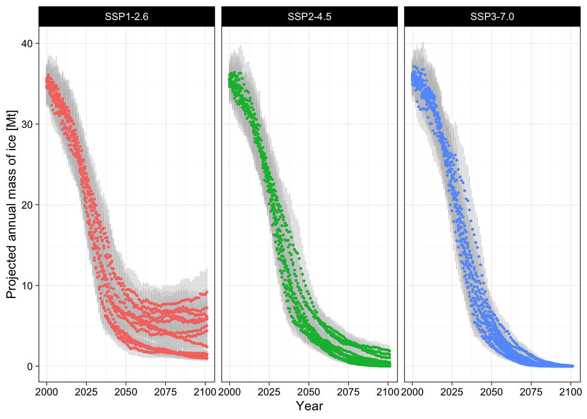
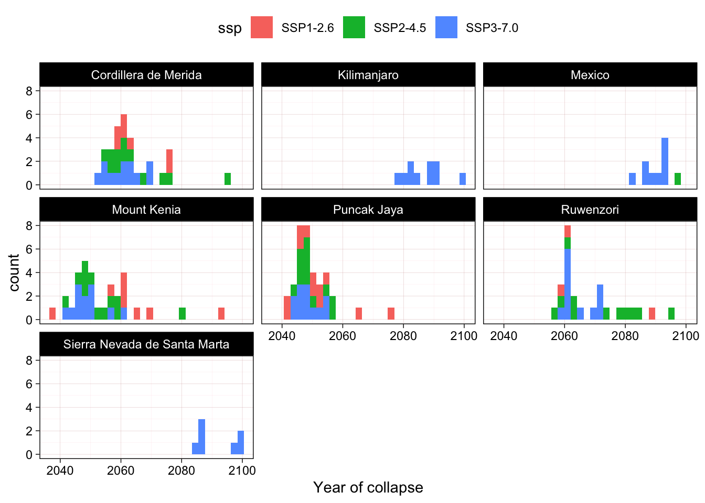
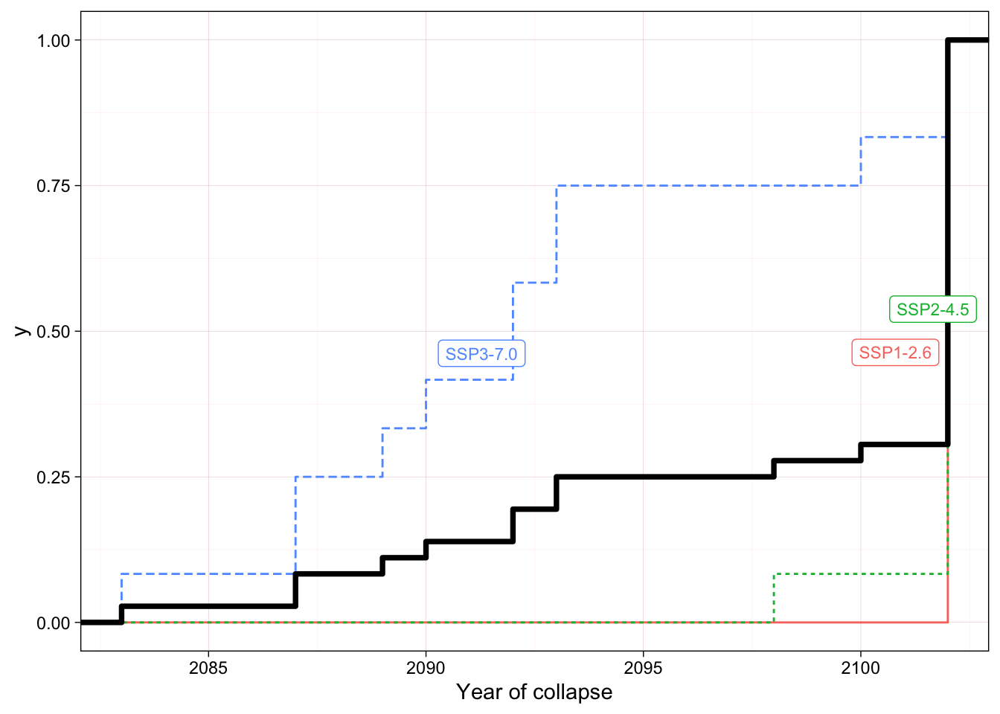

3 Projection of Ice Mass Balance
We use ice mass balance projections for all tropical glaciers based on a glacier evolution model (Rounce et al., 2023). This hybrid model combines a mass balance module and a glacier dynamics module to model glaciers independently from 2000-2100 for various ensembles of Global Circulation Models (GCM) and scenarios of Shared Socio-economic Pathways (SSP).
According to the published methods (Rounce et al., 2023):
The model computes the climatic mass balance (i.e., snow accumulation minus melt plus refreezing) for each surface elevation bin using a monthly time step. The model computes glacier melt using a degree-day model, accumulation using a temperature threshold, and refreezing based on the annual air temperature. Glacier geometry is updated annually using a flowline model based on the Shallow-Ice Approximation to explicitly account for glacier dynamics using a density of 900 kg m-3 for converting mass to volume.
The values used here are the output values (ice mass \(\pm\) median absolute deviation) of the model for all glacier outlines of the Randolph Glacier Inventory for the Low Latitudes region downloaded from Rounce et al. (2022). Estimated initial values summarised by assessment unit are presented in Table 3.1.
The model predicts future median ice mass values and their variability (as median absolute deviation) between 2000 and 2100 based on 12 unnamed GCMs and 5 SSP. This results in considerable uncertainty in future predictions of the total ice mass for each unit (see Figure 3.1 for an example of one unit and three scenarios).

The values in the above example might overestimate the existing ice mass for smaller glacier outlines, especially in isolated and restricted regions where scale and edge effect might play significant roles (Ferrer-Paris et al., 2023). The absolute values have to be used with caution, but we will focus most analysis on range standardised measures, thus focusing more on the change relative to initial values and threshold of collapse and not on the absolute values per se.
Ice mass can decline to 0 kg, indicating the the glacier ecosystem collapses due to the disappearance of the ice substrate and the subsequent demise of its ice-dependent microbiota. For some regions the model predicts collapse in all scenarios, but other regions might retain (a reduced amount) of glacier ice beyond 2100, see Table 3.2.
We use the time series of mass projections to estimate the year of collapse (first year when mass reaches zero) for each combination of models and scenarios. For at least seven asssessment units a proportion of the dynamic ice mass balance models predict total loss of ice between 2040 and 2100, see Figure 3.2.
For one unit the collapse might occurs between 2100-2102

Alternatively, we can use the empirical cumulative distribution function of the year of collapse to estimate the proportion of models indicating collapse for each year (Figure 3.3).
